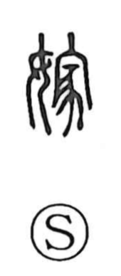

嫁

Kun: yome, totsugu | On: ka
bride ・ to marry into a family ・ wife
Explanation
A phonetic–semantic character formed with 女 “woman” and 家, with 家 serving as the phonetic element (giving the On reading ka) and evoking, in its original sense, the ancestral house or mausoleum where forebears were venerated. In ancient China, clans (xing) married outside the surname, and the newly wed woman was accepted into her husband’s lineage by visiting and serving at its ancestral shrine. The character thus depicts a woman who enters and serves in that ancestral house, yielding the meanings “bride” and “to marry into a family.” By extension, it can also mean to foist or impute something onto another, as in laying blame on someone.